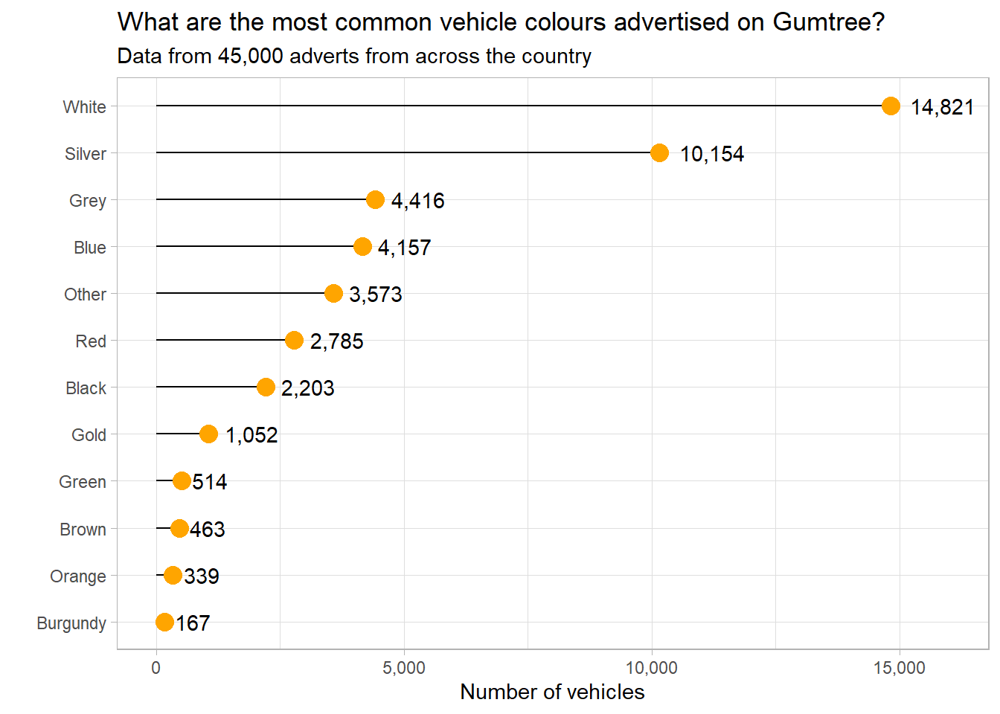
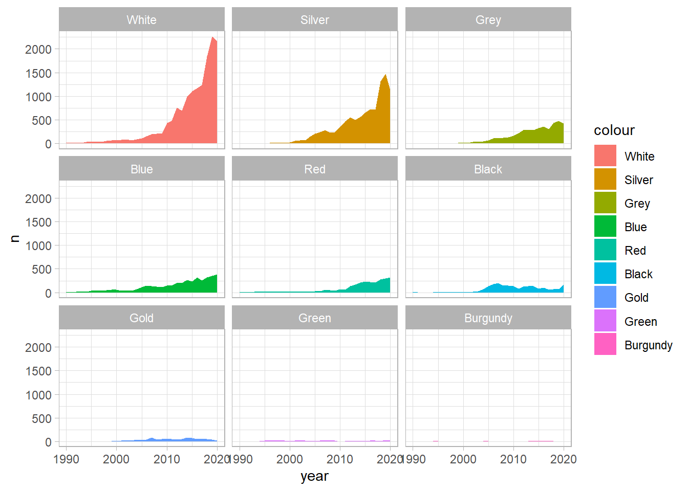
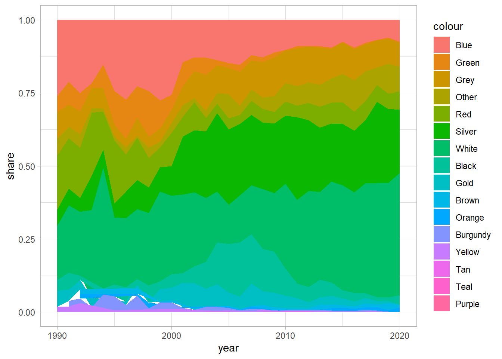
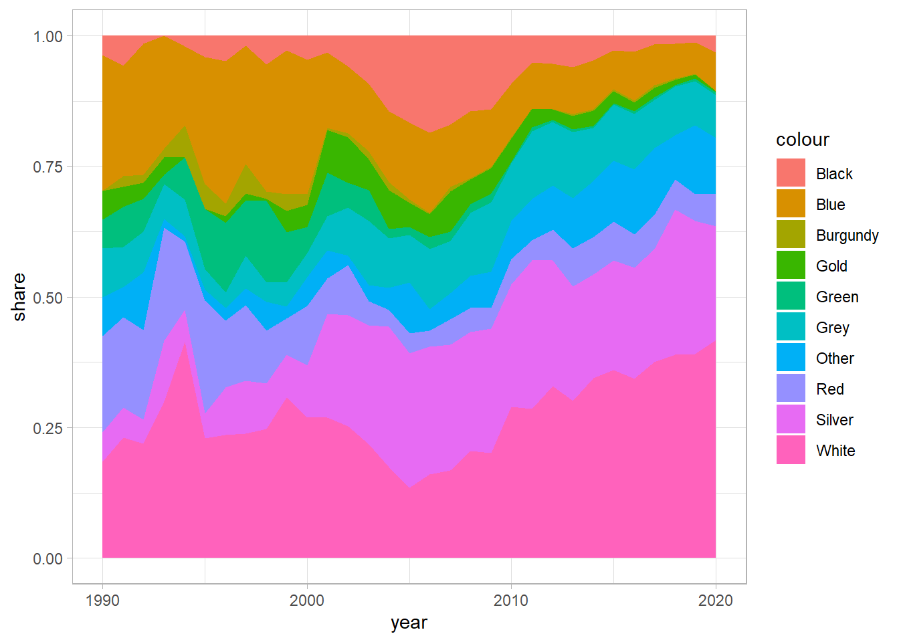
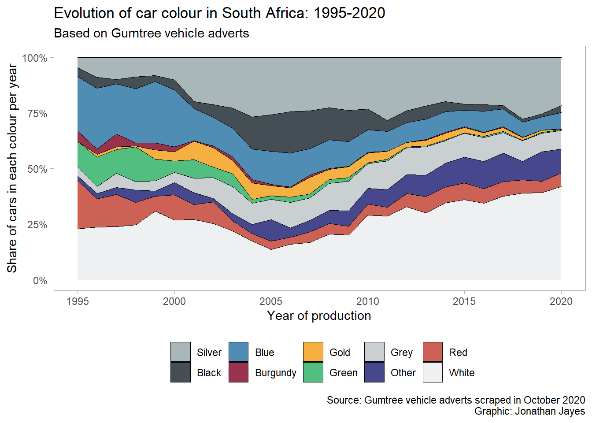

df_plotly <- read_rds("data/car_colour/df_plotly.rds")
p_load(plotly)
g <- df_plotly %>%
ggplot(aes(year, share, fill = colour)) +
geom_area(colour = "black", size = .2, alpha = .8) +
scale_fill_manual(values = c("#17202A", "#2471A3", "#800020", "#F39C12", "#27AE60", "#BDC3C7", "midnightblue", "#C0392B", "#95A5A6", "#F8F9F9")) +
scale_y_continuous(labels = scales::percent_format()) +
theme(legend.position = "bottom",
panel.grid = element_blank()) +
labs(title = "Evolution of car colour in South Africa: 1995-2020",
subtitle = "Based on Gumtree vehicle adverts",
x = "Year of production",
y = "Share of cars in each colour per year",
fill = "",
caption = "Source: Source: Gumtree vehicle adverts scraped in October 2020\nGraphic: Jonathan Jayes")
ggplotly(g)South African Car Colour Exploration
In this document I walk through creating a stacked area chart showing the evolution of car colour over time in South Africa. The data comes from nearly 45,000 adverts for cars that I scraped from Gumtree.
Purpose
While driving to Cape Town this past weekend in my beautiful white Hyundai i10, a German friend asked why every second car in South Africa was white in colour. While I didn’t have a compelling reason, I did have a some data to assess whether it was true that half of cars on the road are white.
In this document I walk through creating a stacked area chart showing the evolution of car colour over time in South Africa. The data comes from nearly 45,000 adverts for cars that I scraped from Gumtree.
I show a useful trick for filling in missing data that creates gaps in the area chart using dplyr’s pivot_wider and pivot_longer commands.
Here is the final interactive graphic:
df <- readRDS("data/car_colour/gumtree_ads_2020-10-01-11-33-am.rds")
df <- df %>% filter(!is.na(make),
!is.na(colour),
!is.na(model)) %>%
# Removing the duplicated province names
mutate(province = str_remove(province, "\\,.*"))What does the data look like?
skimr::skim(df)| Name | df |
| Number of rows | 44644 |
| Number of columns | 30 |
| _______________________ | |
| Column type frequency: | |
| character | 22 |
| numeric | 8 |
| ________________________ | |
| Group variables | None |
Variable type: character
| skim_variable | n_missing | complete_rate | min | max | empty | n_unique | whitespace |
|---|---|---|---|---|---|---|---|
| link | 0 | 1.00 | 68 | 86 | 0 | 2218 | 0 |
| ad_url | 0 | 1.00 | 78 | 193 | 0 | 38392 | 0 |
| site | 0 | 1.00 | 7 | 7 | 0 | 1 | 0 |
| seller_type | 0 | 1.00 | 19 | 30 | 0 | 2 | 0 |
| title | 0 | 1.00 | 4 | 100 | 0 | 26140 | 0 |
| text | 0 | 1.00 | 10 | 3885 | 0 | 38343 | 0 |
| ad_date | 0 | 1.00 | 19 | 19 | 0 | 42416 | 0 |
| seller_name | 0 | 1.00 | 1 | 50 | 0 | 8872 | 0 |
| location | 0 | 1.00 | 24 | 61 | 0 | 428 | 0 |
| seller_age | 0 | 1.00 | 17 | 22 | 0 | 79 | 0 |
| n_all_time_ads | 0 | 1.00 | 1 | 7 | 0 | 3481 | 0 |
| scrape_time | 0 | 1.00 | 19 | 19 | 0 | 35812 | 0 |
| location_2 | 0 | 1.00 | 11 | 47 | 0 | 428 | 0 |
| for_sale_by | 226 | 0.99 | 5 | 6 | 0 | 2 | 0 |
| make | 0 | 1.00 | 3 | 13 | 0 | 37 | 0 |
| model | 0 | 1.00 | 1 | 20 | 0 | 459 | 0 |
| body_type | 226 | 0.99 | 3 | 12 | 0 | 11 | 0 |
| transmission | 206 | 1.00 | 6 | 9 | 0 | 2 | 0 |
| fuel_type | 104 | 1.00 | 6 | 8 | 0 | 4 | 0 |
| colour | 0 | 1.00 | 3 | 8 | 0 | 16 | 0 |
| na | 44644 | 0.00 | NA | NA | 0 | 0 | 0 |
| province | 0 | 1.00 | 7 | 13 | 0 | 9 | 0 |
Variable type: numeric
| skim_variable | n_missing | complete_rate | mean | sd | p0 | p25 | p50 | p75 | p100 | hist |
|---|---|---|---|---|---|---|---|---|---|---|
| page | 0 | 1.00 | 14.51 | 12.66 | 1 | 4.00 | 11.0 | 22.00 | 50 | ▇▃▂▁▁ |
| ad_number | 0 | 1.00 | 23570.95 | 14487.85 | 1 | 11471.75 | 22889.5 | 34258.25 | 56454 | ▇▇▇▆▂ |
| price | 229 | 0.99 | 218706.68 | 692268.63 | 1 | 109900.00 | 165000.0 | 259900.00 | 140000000 | ▇▁▁▁▁ |
| n_photos | 1099 | 0.98 | 8.63 | 3.08 | 1 | 7.00 | 9.0 | 12.00 | 12 | ▁▂▃▃▇ |
| n_views | 0 | 1.00 | 588.85 | 1281.69 | 0 | 91.00 | 233.5 | 580.00 | 46956 | ▇▁▁▁▁ |
| n_active_ads | 0 | 1.00 | 130.20 | 225.27 | 1 | 5.50 | 29.0 | 100.00 | 997 | ▇▁▁▁▁ |
| year | 100 | 1.00 | 2013.76 | 6.66 | 1900 | 2011.00 | 2016.0 | 2018.00 | 2021 | ▁▁▁▁▇ |
| kilometers | 1189 | 0.97 | 92267.35 | 157493.13 | 1 | 26890.50 | 72000.0 | 130000.00 | 9999999 | ▇▁▁▁▁ |
The dataset has some really nice information on the cars advertised, including their characteristics, as well as the location and name of the seller.
For this graphic, we only need the car’s year and colour.
What are the most common car colours advertised?
We start by plotting the number of cars in each colour advertised on Gumtree. In this plot I show the 12 most common colours.
It is evident that white and silver cars are very common. In as far as our data reflects cars on the road, white cars make up nearly 1/3 of all cars advertised! A little less than the half quoted in the discussion above, but certainly the dominant colour.
df %>%
mutate(colour = fct_lump(colour, 12)) %>%
select(colour) %>%
count(colour, sort = T) %>%
mutate(colour = fct_reorder(colour, n)) %>%
ggplot(aes(n, colour)) +
geom_segment(aes(xend = 0, yend = colour)) +
geom_point(size = 4, colour = "orange") +
geom_text(aes(label = scales::comma(n)), hjust = -.3) +
scale_x_continuous(labels = scales::comma_format(), limits = c(0, 16000)) +
labs(x = "Number of vehicles",
title = "What are the most common vehicle colours advertised on Gumtree?",
subtitle = "Data from 45,000 adverts from across the country",
y = "")
How has the colour of cars changed over time?
Next we want to know if some colours have become more popular over time. Given that our data source is a snapshot of cars for sale at one point in time and on one online website, this is unlikely to be representative of the entire population of cars in South Africa. However, it will be interesting to see the trends that do exist in this data.
We start with a simple plot of the number of cars advertised in the none more common colours, by year.
df_colours <- df %>%
group_by(year, colour) %>%
summarise(n = n()) %>%
ungroup() %>%
filter(between(year, 1990, 2020)) It makes sense that the majority of adverts are for cars that are produced recently, and it is striking that white and silver cars see such a dramatic increase, even relative to the third most common car colour, grey.
df_colours %>%
mutate(colour = fct_lump(colour, 10)) %>%
filter(colour != "Other") %>%
mutate(colour = fct_reorder(colour, n, .fun = sum, .desc = T)) %>%
ggplot(aes(year, n, fill = colour)) +
geom_area() +
facet_wrap(~ colour)
First stacked area chart attempt
In this plot we show the evolution of car colour between 1990 and the present.
There are a few problems with this plot. First, there are too many colours, the least common of which have just a few entries. Second, the missing values for the less common colours create unappealing white gaps in the bottom left of the plot.
df_colours %>%
group_by(year) %>%
add_tally(n) %>%
ungroup() %>%
mutate(colour = fct_reorder(colour, nn, .fun = sum, .desc = T)) %>%
mutate(share = n / nn) %>%
ggplot(aes(year, share, fill = colour)) +
geom_area()
Solution to gaps in area chart
To solve this problem, we can fill in the missing values by making the dataset wider and then long gain.
Using dplyr’s pivot_wider and the values_fill = 0 option, we create a wide dataset with one row for each year, shown below.
We go from a long dataset like this:
head(df_colours)# A tibble: 6 × 3
year colour n
<dbl> <chr> <int>
1 1990 Black 2
2 1990 Blue 14
3 1990 Gold 3
4 1990 Green 3
5 1990 Grey 5
6 1990 Other 3To a wide one, like this:
df_colours <- df_colours %>%
mutate(colour = fct_lump(colour, 10)) %>%
group_by(year, colour) %>%
mutate(n = sum(n)) %>%
ungroup() %>%
distinct() %>%
pivot_wider(names_from = colour, values_from = n, values_fill = 0)
head(df_colours)# A tibble: 6 × 11
year Black Blue Gold Green Grey Other Red Silver White Burgundy
<dbl> <int> <int> <int> <int> <int> <int> <int> <int> <int> <int>
1 1990 2 14 3 3 5 4 10 3 10 0
2 1991 3 11 2 4 4 3 9 3 12 1
3 1992 1 16 2 4 5 7 11 3 14 1
4 1993 0 13 2 1 4 1 13 7 18 1
5 1994 2 15 0 8 7 1 13 6 41 6
6 1995 6 36 0 17 6 3 32 7 34 7Now we have a ‘wide’ dataset with the missing values filled in with zeros
We can then make it long again, with the pivot_longer command, specifying that we want the original column names back.
df_colours <- df_colours %>%
pivot_longer(!year, names_to = "colour", values_to = "n")
head(df_colours)# A tibble: 6 × 3
year colour n
<dbl> <chr> <int>
1 1990 Black 2
2 1990 Blue 14
3 1990 Gold 3
4 1990 Green 3
5 1990 Grey 5
6 1990 Other 4Putting it together
Now we have a plot with no white gaps, and an appropriate number of colours. However, it would be nice to have the colours on the plot match the colours of the cars, and have some labels to make it clear to the reader how to interpret the graphic.
df_colours %>%
group_by(year) %>%
add_tally(n) %>%
ungroup() %>%
mutate(share = n / nn) %>%
ggplot(aes(year, share, fill = colour)) +
geom_area()
Tightening up the graphic
We use ggplot’s scale_fill_manual to specify the hex codes for the colours in the order that they appear in the plot.
We add in a title and axes labels, and make the plot interactive with ggplotly.
g <- df_colours %>%
filter(year > 1994) %>%
group_by(year) %>%
add_tally(n) %>%
ungroup() %>%
mutate(share = n / nn) %>%
ggplot(aes(year, share, fill = colour)) +
geom_area(colour = "black", size = .2, alpha = .8) +
scale_fill_manual(values = c("#17202A", "#2471A3", "#800020", "#F39C12", "#27AE60", "#BDC3C7", "midnightblue", "#C0392B", "#95A5A6", "#F8F9F9")) +
scale_y_continuous(labels = scales::percent_format()) +
theme(legend.position = "bottom",
panel.grid = element_blank()) +
labs(title = "Evolution of car colour in South Africa: 1995-2020",
subtitle = "Based on Gumtree vehicle adverts",
x = "Year of production",
y = "Share of cars in each colour per year",
fill = "",
caption = "Source: Source: Gumtree vehicle adverts scraped in October 2020\nGraphic: Jonathan Jayes")
ggplotly(g)Conclusion
Wow! Blue and Green cars really lost out to white and Silver ones over time. Of the cars advertised that were produced in 2020, nearly 42% are white!
Black cars seemed to have a peak in popularity around 2007, and then decline again, coinciding with the first round of load-shedding in South Africa.
Thanks for reading along, and I hope you enjoyed learning about ggplot as well as the cars on South Africa’s roads!
Post script
Here is the static figure with accompanying caption.
# jpeg(
# filename="figures/stacked_area_2.jpeg",
# width=6,
# height=4,
# units="in",
# res=1000)
df_colours %>%
filter(year > 1994) %>%
group_by(year) %>%
add_tally(n) %>%
ungroup() %>%
mutate(share = n / nn) %>%
mutate(colour = fct_relevel(colour, "Silver")) %>%
ggplot(aes(year, share, fill = colour)) +
geom_area(colour = "black", size = .2, alpha = .8) +
scale_fill_manual(values = c("#95A5A6", "#17202A", "#2471A3", "#800020", "#F39C12", "#27AE60", "#BDC3C7", "midnightblue", "#C0392B", "#EAECEE")) +
scale_y_continuous(labels = scales::percent_format()) +
theme(legend.position = "bottom",
panel.grid = element_blank()) +
labs(title = "Evolution of car colour in South Africa: 1995-2020",
subtitle = "Based on Gumtree vehicle adverts",
x = "Year of production",
y = "Share of cars in each colour per year",
fill = "",
caption = "Source: Gumtree vehicle adverts scraped in October 2020\nGraphic: Jonathan Jayes")
# dev.off()Distill is a publication format for scientific and technical writing, native to the web.
Learn more about using Distill at https://rstudio.github.io/distill.